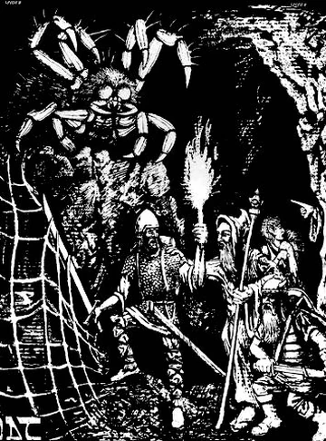
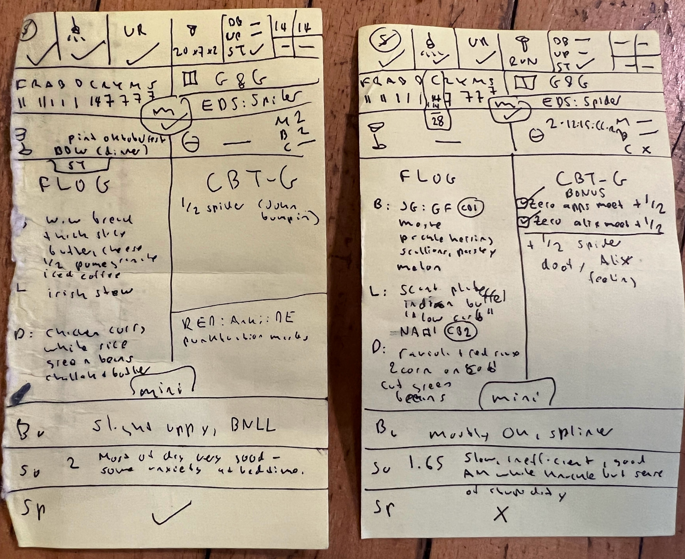
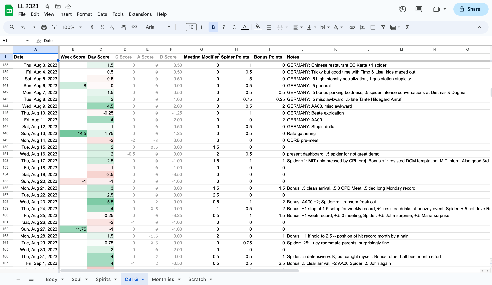

<!DOCTYPE html>

<head>
<meta charset="utf-8"/>
<meta content="width=device-width, initial-scale=1.0" name="viewport"/>
<title>Episode 78: Spider Hunter, a CBT for Anxiety Game</title>
<link rel="stylesheet" href="../../css/style.css" />
<style>
.fullw { max-width: 800px; }
figure { margin: 0; }
</style>
<script type="text/javascript">

</script>
</head>
<body>
<div id="main">
<h1><a href="/">Everyday Systems</a>: <a href="../../">Podcast</a> : Episode 78</h1>
<h2>Spider Hunter, a CBT for Anxiety Game</h2>
<iframe class="yt-player" width="100%" height="200" src="https://www.youtube-nocookie.com/embed/S7edZbzsDVg?modestbranding=1&rel=0&playsinline=1" title="Everyday Systems Podcast Episode 78" loading="lazy" allow="accelerometer; autoplay; clipboard-write; encrypted-media; gyroscope; picture-in-picture; web-share" referrerpolicy="strict-origin-when-cross-origin" allowfullscreen></iframe>
<p style="text-align:center"><a href="http://media.libsyn.com/media/reinhard/eds-78-spider-hunter.mp3">Download mp3</a></p>


<p>Hi, this is Reinhard from Everyday Systems.
</p>
<p>Exposure therapy – I’m sure you’ve heard of this. It’s a cornerstone of CBT, or cognitive behavioral therapy. The idea is that the way to conquer a fear is to face it, in a controlled, gradually increasing way. Say, and this is the canonical example, if someone is afraid of spiders. To treat them with exposure therapy, you give them closer and closer encounters with bigger and bigger spiders until they gradually, emotionally learn “this thing isn’t actually going to kill me.”
</p>
<p>This approach makes a certain amount of intuitive sense, and apparently, it actually works. It is also sort of morally satisfying, which is unusual for modern medicine. It feels like the patient has earned something; they've done a hard, right thing. They've conquered fear by being brave. It’s a nice bonus, this moral element.
</p>
<p>But what about fears that are less clear cut than physical phobias? Say, social anxieties? How do you engineer exposures to things like that? A spider is either here or not here. But the object of a social anxiety is like a ghost. Who knows if it’s even there, much less how to summon it.
</p>
<p>One part is easy: social <em>situations</em>. You can engineer exposures to that, to the situations, which may or may not wind up containing the anxiety-provoking element you fear.
</p>
<p>In <a href="http://www.amazon.com/exec/obidos/ASIN/152474672X/everydaysyste-20">Dopamine Nation</a>, a fascinating book by the Stanford psychologist Anna Lembke, she describes how a patient for social anxiety was given a “therapy homework” assignment, that involved every day approaching a coworker at lunch, get himself into that social situation, and rate his distress on a scale of one to ten. He even had a script they worked out to make it easier for him to introduce himself. That exercise proved very helpful. It gradually got easier for him to approach people and to talk to them.
</p>
<p>And then his therapist asked him to take it up a notch by speaking to the barista at starbucks, just making smalltalk, apparently a situation he found even more awkward and terrifying than approaching random co-workers.
</p>
<p>And then, one day, and this is where it gets really interesting, he knocked over his coffee during one of these encounters with the barista. It was his total nightmare. It was so embarrassing. It was like the spider he was trying to conquer his fear of bit him. It was like the opposite of exposure therapy, that he learned, “spiders really are that dangerous!”
</p>
<p>You might think, what a backfire, what a failure of the whole system. It’s confirming the exact thing it’s supposed to disprove. But when he told his therapist about it she said  “do it again. And next time, do it on purpose”
</p>
<p>I love that. It’s brilliant. Your total nightmare: “do it again.”
</p>
<p>The coffee spilling incident highlights an interesting challenge in this sort of exposure therapy. Sometimes, the thing we are afraid of, isn’t so much a situation, but a kind of thing that can happen in a situation. In the case of social anxiety, it’s often not other people per se, but certain things that other people might do or say or seem to be thinking.
</p>
<p>We not only have to get the ghost spider to appear, but we have to get it to bite us, and sit with that pain, tolerate it. We aren’t going for a near miss. We don’t want to learn “spiders don’t really bite.” Because they do, these spiders. And that’s what we have to learn to tolerate and live with.
</p>
<p>But those reactions can be hard to engineer. Truly, though the point is brilliant, there are only so many times you can spill coffee on the barista before they get a restraining order against you.
</p>
<p>I myself suffer from strong social anxiety. You might not think this would be an issue for someone who poses on the internet, bare-chested in his pajamas, next to his jabba the hutt action figure. But at times in my life, it’s been almost debilitating. Mostly it’s under reasonable control these days. But I still struggle, and I often feel like I’ve plateaued in terms of my progress against it, that I’m coping only through evasions and artful dodges rather than because I’m getting stronger and more resilient. And I worry that I’m still vulnerable to a serious relapse if and when a sufficient shock comes around that I can’t evade.
</p>
<p>I was struck once, many years ago, going skydiving, which I found utterly terrifying and will never do again, that I was more afraid of the embarrassment of refusing to jump in front of my friends, than of <em>dying</em>. That was a bit of a revelation. I fear embarrassment more than death.
</p>
<p>So this is not a small thing, this fear. And maybe I’m not the only one who feels something like it. So given the strength of this fear, and the potential widespreadness of it, and the fact that it’s very much still a live issue for me, I thought, maybe this is a good candidate for an everyday system.
</p>
<p>For a long time (years, decades) the right system evaded me. It’s a deep problem that part of me doesn’t really want to solve. But I think I finally stumbled onto something. It’s a sort CBT for anxiety game where I keep a running tab of points in a spreadsheet. I call it Spider Hunter, and it’s an attempt to address the problem of how to flush out and face those metaphorical social spiders I’m so scared of, and to face them properly even when they jump out at me in the wild.
</p>
<p>I’ve been playtesting it, so to speak, with myself for the last 6 months or so, and it’s helping. I don’t think it’s quite perfect yet, but promising enough for a preview.
</p>
<p>The central premise is this: what I am afraid of is embarrassment, humiliation, looking stupid, seeming incompetent, disapproval. I am afraid of other human beings assessing me like that. They don’t even have to say it, I just need to imagine they are thinking it. That’s my spider. It’s silly. I see clearly that it doesn't have any rational validity. I wish I didn’t feel this way. But I do. And it affects me powerfully.
</p>
<p>The thing about this fear is that it’s not so easy to capture and package for exposure. I can’t just keep a pet humiliation in a terrarium under my desk to whip out every now and then.
</p>
<p>I can put myself in situations where I am more exposed to embarrassment, but remember, the situations aren’t the spiders themselves. They’re just the habitats in which the spiders tend to live. The spiders may or may not be there on any given day. And sometimes spiders fall from the ceiling when I wasn’t even expecting them.
</p>
<p>So I thought to myself, OK, I will try to put myself into more spidery situations, where my fears tend to live, and I will give myself points for that, to encourage me to do that. Seeking spidery situations will translate indirectly into encountering more spiders. That does have some value.
</p>
<p>But the focus of my game is going to be giving myself points when I actually encounter a spider. I can’t make that happen with 100% reliability, but I can increase the odds, and most importantly, when it happens, planned or unplanned, I can respond to the situation differently than I would have otherwise.
</p>
<p>Instead of freaking out and castigating myself “how could I have allowed this to happen? Another spider – why was I so stupid to allow it to catch me?” I think “excellent! I just got a successful exposure to my spider. I get spider points. It feels bad, sure, but not actually as bad as I’d feared. I’m still alive. “
</p>
<p>That’s the essence of the game. Part seeking spider habitats, but mostly noticing when the spiders actually come, and accepting them, almost welcoming them, and noticing how they feel.
</p>
<p>In a way, it’s a kind of mindfulness. It detaches me a bit from the experience, the observing. It makes it, I’m not going to say less painful, because it still is painful, but less overwhelming in its carrying me along. So it has a kind of immediate, in the moment benefit as well, in terms of improving the quality of the pain if not reducing the quantity of the pain, in addition to the longer-term “exposure therapy” learning.
</p>
<p>I note spider points on the back of my daily punch card, with 1 point being a respectable spider, ½ being something minor or borderline, and 2 or more for a massive tarantula. Every week then I transfer them to a CBT-G tab (for CBT Game)  in my lifelog spreadsheet, along with my other punch card stats. I tally up my points for the day, the week, the month and when I get that far, the year. I hope to see improvement. I’ve already seen some.
</p>
<figure>
<figcaption>CBT Game Point Tracking on Daily Punch Cards</figcaption>

</figure>
<figure>
<figcaption>CBT Game Point Tracking in Life Log</figcaption>

</figure>
<p>Besides spider points, which are the core of the game, there are also bonus points, for throwing myself into spider habitats and other dangerous situations whether or not I actually encounter a spider there, meeting points, which are basically a kind of bonus points, but so common that I track them separately (much of my anxiety is work related – I can tabulate meeting points just by looking at my work calendar), and finally penalties, point deductions, for resorting to crutches.
</p>
<p>Crutches are things that allow me to dull the fear of spiders, or evade them altogether, so I don’t get the full exposure value I need from them. For me, my crutches are alcohol and ativan, a prescription anxiety medication I am trying to wean myself off of. Alcohol is my social anxiety crutch and ativan is my work anxiety crutch. I’ve already been tracking these crutches in my lifelog for several years, so it’s easy to reference those values from my CBT-G tab with a formula instead of having to type them over again. And now I’ve got a double incentive to be on my guard against them.
</p>
<p>Spider points, meeting points, bonus points – these are all a little subjective. That’s OK. The point is not accurate scientific measurements, but motivation. This is a game after all. The crutch penalties, however, point to something quantifiable in reality. In addition to their motivational value, they’re a good objective yardstick as to how I’m progressing – this many fewer milligrams, this many fewer milliliters, this many more days without any of either. It’s a direct point of contact with reality to make sure this isn’t just all in my head.
</p>
<p>But spider points, even if they’re fuzzier, have to remain the core of the game. That’s what it’s really about. The situations, the crutches, they're peripheral. I can try to search for spiders, but at the end of the day, I never know where one might jump out at me. The surprise is a fundamental part of it. At least sometimes, it’s the spiders that are doing the hunting in this game. I’m just getting myself psyched up to be hunted by them and to respond in the right way when they catch me.
</p>
<p>Whether you were hunting a spider, or it was hunting you, the key moment  of Spider Hunter is when you encounter one of them. You are scared but, because you’ve primed yourself, right, you read the Spider Hunter rule book (this podcast episode), you recognize what is happening, and you pay attention to your reaction. You see and are pained by your weakness. You wish you didn’t feel it. But you realize that you can tolerate the pain. Breath in. “So this is what pain feels like.” Breath out. Let it go. Don’t obsess over it, don’t berate yourself about it and let it carry you away, you just notice it, like in meditation when you notice thoughts. And you give yourself a spider point.
</p>
<p>One of the big picture things I’ve noticed is that most of the time, when I’m not playing this game, I’m actively playing the opposite game, spider avoider. So much of my conscious and unconscious thought is, by default,  about how to avoid embarrassing situations. I plan meetings carefully to minimize spider potential. I cluster tough ones when I can so that one dose of anxiety medication can provide cover for all of them. I call these machinations about how to deploy my “artificial courage,”  and otherwise avoid or minimize scary situations “strategic cowardice.” So one way or another I’m playing a game. I’d rather be playing the game that helps me grow stronger.
</p>
<p>Maybe that’s the only choice I have in the matter, what game to play. And to realize that I’m playing it.
</p>
<p>My hope, though, is that someday I’ll be able to stop playing both games. We’ll see.
</p>
<p>On the script page for this episode I’ll include a couple of photos and a screenshot of how I track my spider points on the back of my daily punch cards and in my life log. I don’t know how important the precise mechanics are vs. the larger concept, but in case it’s helpful, you can see the gory details of what I’ve been doing.
</p>
<p>My description of Spider Hunter (and certainly these documents I’m posting with the script) are very particular to me, to my particular anxieties. But I think it wouldn’t be hard to adapt the basic mechanism to all kinds of phobias, all species of spiders.
</p>
<p>And it doesn’t even have to be a phobia, it could be anger, or some other feeling that troubles you. And whatever it is, it’s not about not feeling it. It’s not about doing anything differently necessarily. It’s about noticing that you are feeling it.
</p>
<p>Basically spider hunter is gamified mindfulness, exposure therapy in the wild. You have this points structure to incentivize you to put out your antennae to notice some fear or other negative emotional response that you are working on. And then when you do, you don’t do anything differently, you just take it differently. It’s about catching yourself in the presence of the thing you are afraid of or made uncomfortable by and just noticing it and taking it as an exposure, taking it therapeutically, realizing that this pain, that you were so afraid of, it hurts, but it’s not killing you. The thing itself is bad, but the fear was worse. That lesson, over and over again, will eventually make both the fear and the thing itself less awful.
</p>
<p>All my favorite board games have lots of expansions. Maybe Spider Hunter will have some too. When I feel I’ve made more progress against this spider of social anxiety, maybe I’ll start targeting other spiders in a similar way.
</p>
<p>Well, on this podcast I’ve been a diet guru, a fitness trainer, and now I’m a therapist. Of course as you know I’m none of these things. I am just a random person on the internet with no relevant credentials. I'm an amateur phsychological game designer, maybe. So please take this with a healthy dose of skepticism and run it by an actual therapist if you are intrigued.
</p>
<p>That’s all for now. Thanks for listening.
</p>
<p>By <a href="mailto:reinhard.engels@gmail.com">Reinhard Engels</a></p>
<p>© 2002-2023  <a href="http://everydaysystems.com">Everyday Systems LLC</a>, All Rights Reserved.<p style="text-align:center"><a href="https://everydaysystems.com/bb/viewtopic.php?t=12652">Discuss</a></p>
 src="/assets/js/year.js?v=2" defer></script>
</body>
